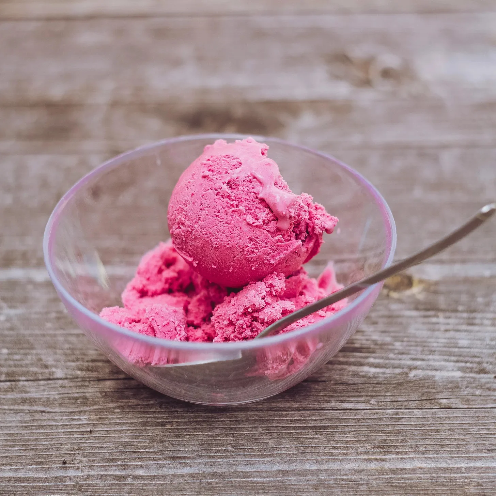

“피스타치오 세 스쿱 주세요.” 와플콘과 녹는 초콜릿 향이 진하게 퍼지는 가운데 내가 말했다.
[“Three scoops of pistachio, please,” I said, the scent of waffle cones and melting chocolate thick in the air.]
주름투성이 얼굴을 한 카운터 뒤의 할머니는 능숙한 손놀림으로 연녹색 아이스크림을 퍼냈다.
[The old woman behind the counter, her face a roadmap of wrinkles, scooped the pale green ice cream with a practiced hand.]
아이스크림은 부드러운 소리를 내며 콘에 떨어졌고, 형광등 아래에서 완벽한 구체 모양으로 빛났다.
[It landed in the cone with a soft thud, each perfect globe gleaming under the fluorescent lights.]
“행운의 피스타치오네.” 할머니가 바스락거리는 잎사귀 같은 목소리로 중얼거렸다. 아이스크림 기계 돌아가는 소리 때문에 거의 듣지 못할 뻔했다.
[“Lucky pistachio,” she murmured, her voice like rustling leaves. I almost didn’t catch it over the whirring of the ice cream machines.]
“네?” 나는 구겨진 5달러 지폐를 건네며 물었다.
[“Excuse me?” I asked, handing over a crumpled five dollar bill.]
할머니는 눈까지는 닿지 않는 알 수 없는 미소를 지었다. 나이 든 반점이 있는 손으로 돈을 받으며 “맛있게 드세요."라고 말했다. 이번에는 목소리가 깨진 유리처럼 날카로웠다.
[She just smiled, a cryptic, knowing smile that didn’t reach her eyes. Her hand, spotted with age, closed over the money. “Enjoy,” she said, her voice clearer now, sharp as broken glass.]
나는 아이스크림이 벌써 녹기 시작하는 따뜻한 여름 공기 속으로 걸어 나갔다. 녹아내리는 달콤함을 핥자 피스타치오 맛이 혀에 퍼졌다. 행운? 피스타치오가 행운이라고 생각해 본 적은 없었다. 내 행운의 맛은 민트 초콜릿 칩이었다. 보통은 그걸 먹었는데. 하지만 오늘은 그냥 피스타치오가 먹고 싶었다.
[I stepped out into the warm summer air, the ice cream already starting to melt. I licked at the dripping sweetness, the pistachio flavor bursting on my tongue. Lucky? I’d never thought of pistachio as lucky. My lucky flavor was mint chocolate chip. That’s what I usually got. But today, I just felt like pistachio.]
나는 갓 구운 빵 냄새가 유혹적인 빵집과 활기찬 꽃들로 가득한 꽃집을 지나 거리를 걸었다. 사람들은 자신의 세상에 빠져 서둘러 지나갔다. 햇볕이 아스팔트를 내리쬐며 주차된 차들에 반짝였다. 그저 평범한 날, 완벽하게 평범한 여름날이었다.
[I walked down the street, past the bakery with its tempting aroma of fresh bread and the flower shop bursting with vibrant blooms. People hurried by, lost in their own worlds. The sun beat down on the pavement, shimmering off the parked cars. It was just an ordinary day, a perfectly ordinary summer day.]
그러다가, 모든 것이 달라졌다.
[Until it wasn’t.]
검은 고양이 한 마리가 내 앞을 가로질러 달려갔다. 털은 한밤중처럼 칠흑 같았다. 나는 하마터면 고양이에 걸려 넘어질 뻔했다. 등골이 오싹했다. 할머니는 검은 고양이가 불행을 가져온다고 했었다. 하지만 그냥 고양이일 뿐이라고 스스로에게 말했다. 미신일 뿐이라고.
[A black cat streaked across my path, its fur as dark as midnight. I nearly tripped over it. A shiver ran down my spine. Bad luck, my grandmother used to say. Black cats are bad luck. But it was just a cat, I told myself. Superstition.]
그때 바람이 불어와 내 주위를 휘감으며 머리카락을 잡아당기고 치마를 다리에 휘감았다. 방금 전까지만 해도 맑고 푸르렀던 하늘이 병든 듯한 녹색으로 변했다. 공기는 무거워졌고, 이상한 기운으로 가득 찼다.
[Then the wind picked up, swirling around me, tugging at my hair, whipping my skirt around my legs. The sky, moments before a clear and brilliant blue, turned a sickly shade of green. The air grew heavy, charged with a strange energy.]
거리의 사람들은 멈춰 서서 하늘을 올려다보았고, 그들의 얼굴에는 두려움이 가득했다. 낮은 울림 소리가 시작되어 점점 커지면서 땅을 통해 내 뼈까지 진동했다. 그 울림은 귀청이 터질 듯하고 무서운 굉음으로 변했다.
[People on the street stopped, looked up at the sky, fear etched on their faces. A low rumble started, growing louder, vibrating through the ground and up into my bones. The rumble turned into a roar, deafening, terrifying.]
땅이 흔들리기 시작했고, 건물들이 흔들렸고, 보도에 균열이 생겨났으며, 놀라운 속도로 넓어졌다. 사람들은 공황 상태에 빠져 혼란스럽게 비명을 질렀다.
[The ground began to shake, buildings swayed, cracks appeared in the pavement, widening with alarming speed. People screamed, a chaotic chorus of panic.]
그리고 나서 나는 그것을 보았다. 다른 균열보다 더 큰 균열이 내 바로 앞에 열렸다. 그것은 어둡고 끝이 없는 크게 갈라진 구멍이었다. 유황 냄새가 그 깊은 곳에서 올라와 공기를 질식시켰다.
[And then, I saw it. A crack, wider than the others, opened up right in front of me. It was a gaping maw, dark and bottomless. The stench of sulfur rose from its depths, choking the air.]
나는 가슴이 갈비뼈에 부딪히는 것을 느끼며 비틀거렸다. 아이스크림 콘이 내 손에서 미끄러져 나와 심연 속으로 떨어졌다. 세 스쿱의 피스타치오가 어둠 속으로 떨어졌다.
[I stumbled back, my heart hammering against my ribs. The ice cream cone slipped from my hand, falling into the abyss. Three scoops of pistachio, plummeting into the darkness.]
내 행운의 피스타치오.
[My lucky pistachio.]
"열일곱,” 나는 축축한 흙에서 꿈틀거리는 지렁이를 하나 더 잡으며 중얼거렸다. 이미 갈색으로 물든 내 손가락이 차갑고 미끈거리는 지렁이 몸통을 꽉 쥐었다. “열여덟,” 나는 다시 세어보면서, 깨진 도자기 찻잔에 지렁이를 떨어뜨렸다.
[“Seventeen,” I muttered, grabbing another wriggling earthworm from the damp soil. My fingers, already stained brown, pinched its cool, slick body. “Eighteen,” I counted again, dropping it into the chipped china teacup I held.]
헤스티아 할머니는 현관 그네에 앉아 곡조 없는 멜로디를 흥얼거리며 지평선에 비구름이 모이는 것을 지켜보고 있었다. 할머니는 항상 지렁이가 풍부할 때를 알았다. 습도 때문이라고 했는데, 그 작은 몸들이 표면 가까이 올라오게 만든다고 했다.
[Grandma Hestia was on the porch swing, humming a tuneless melody and watching the rain clouds gather on the horizon. She always knew when the worms were plentiful. Something about the humidity, she’d said, making their little bodies rise closer to the surface.]
나는 의문을 품지 않았다. 헤스티아 할머니는 많은 것을 알고 있었다. 책에서는 찾을 수 없는 것들. 정원의 참새들과 이야기하는 법이나 수줍은 달맞이꽃에서 꽃을 피우는 법 같은 것들 말이다.
[I didn’t question it. Grandma Hestia knew a lot of things. Things you wouldn’t find in books. Like how to talk to the sparrows in the garden or coax a bloom from the shyest moonflower.]
할머니는 이 지렁이들을 특별한 용도로 필요로 했다. 류머티즘 치료제라고 했지만, 할머니가 지렁이를 먹는 것을 본 적은 없었다. 그리고 나는 묻지 않을 것이다. 어떤 것들은 말하지 않는 것이 좋았다. 할머니의 부드러운 콧노래 리듬과 공기 중에 짙게 깔린 빗냄새 아래 숨겨져 있는 것들.
[She needed these earthworms for something specific, a remedy for her rheumatism, she’d claimed, though I’d never seen her eat them. And I wouldn’t ask. Some things were better left unsaid, hidden beneath the gentle rhythm of her humming and the scent of rain hanging heavy in the air.]
“스물,” 나는 마지막 지렁이를 조심스럽게 찻잔에 넣으며 말했다. 지렁이는 다른 지렁이들과 함께 꿈틀거리며 조용한 꿈틀거림의 교향곡을 연주했다. “이제 충분한가요?”
[“Twenty,” I said, carefully placing the final worm in the teacup. It writhed against its companions, a silent symphony of squirms. “Is that enough?”]
헤스티아 할머니는 콧노래를 멈추고 흐릿한 눈으로 나를 바라보았다. “조금만 더, 얘야,” 할머니는 삐걱거리는 목소리로 말했다. “손님을 위해 충분히 필요해.”
[Grandma Hestia stopped humming and turned her milky gaze toward me. “Just a few more, dearie,” she said, her voice a creaky whisper. “We need enough for the visitor.”]
“무슨 손님이요?” 나는 참지 못하고 질문을 쏟아냈다.
[“What visitor?” I asked, the question tumbling out before I could stop it.]
말린 무화과처럼 쭈글쭈글한 할머니의 입술이 의미심장한 미소를 지었다. “그는 매년 이맘때쯤 온단다. 비가 내리기 시작할 때쯤 말이야.”
[Her lips, wrinkled like dried figs, stretched into a knowing smile. “He comes every year, around this time. Just when the rain starts to fall.”]
첫 번째 굵은 빗방울이 현관에 떨어지기 시작했고, 오래된 나무 바닥에 검은 물방울 무늬가 남았다. 나는 소용돌이치는 잿빛 하늘을 올려다보았고, 불안감이 커져갔다. 이 수수께끼의 손님은 누구일까? 그리고 그는 지렁이와 무슨 관련이 있을까?
[The first fat drops began to splatter on the porch, leaving dark polka dots on the weathered wood. I glanced up at the swirling grey sky, my unease growing. Who was this mysterious visitor? And what did he have to do with earthworms?]
나는 축축한 흙에 손가락을 다시 넣고 더 많은 지렁이를 찾았다. “스물하나… 스물둘…” 나는 계속해서 숫자를 세었고, 각 숫자는 답을 위한 작은 기도였다.
[I dug my fingers back into the damp earth, searching for more worms. “Twenty-one… twenty-two…” I continued counting, each number a small prayer for an answer.]
현관에 그림자가 드리웠다. 나는 위를 올려다보았다. 위의 폭풍우 구름처럼 검은 깃털을 가진 큰 까마귀 한 마리가 난간에 앉아 있었고, 구슬 같은 눈은 내 손에 들린 찻잔에 고정되어 있었다.
[A shadow fell over the porch. I looked up. A large crow, its feathers as black as the storm clouds above, perched on the railing, its beady eyes fixed on the teacup in my hand.]
헤스티아 할머니의 미소가 넓어졌다. “아, 제시간에 맞춰 왔구나,” 할머니는 쉰 목소리로 말했다.
[Grandma Hestia’s smile widened. “Ah, right on time,” she rasped.]
까마귀가 울었고, 그 소리는 쏟아지는 빗속에서 울려 퍼졌다.
[The crow cawed, a sound that echoed through the falling rain.]
헤스티아 할머니는 내 손에서 찻잔을 조심스럽게 가져갔다. 할머니는 까마귀를 향해 찻잔을 내밀었다. 까마귀는 머리를 숙였고, 부리가 크게 벌어졌다…
[Grandma Hestia gently took the teacup from my hands. She held it out towards the crow. The crow dipped its head, its beak opening wide…]